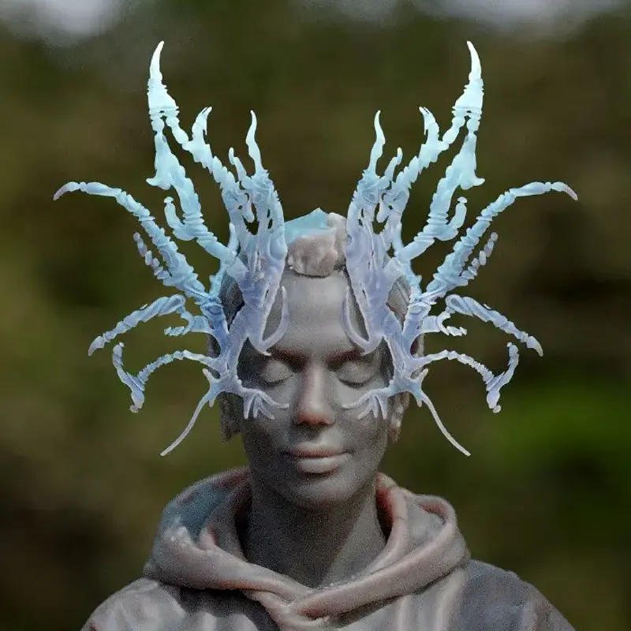
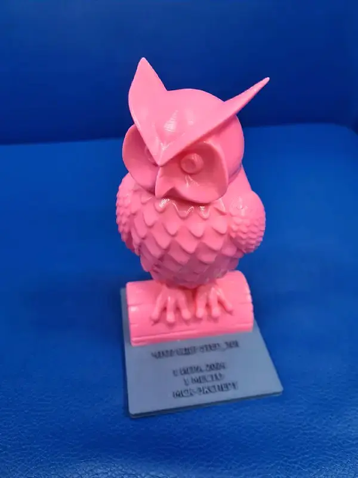

Реализовано01
Реализовано013D-моделирование · 3D-печать · фэшн-тех
Сценический костюм Анны Плетнёвой
Проект представлен Технопарком РГСУ
- 2 видео процесса
- 9 этапов в галерее
 ТехнопаркДизайн и инжинирингОбсудить задачу
ТехнопаркДизайн и инжинирингОбсудить задачу Лаборатория / Проекты
В каталоге сохранены авторы и участники работ. Проекты лаборатории и опыт команды STEP_3D отмечены отдельно. Откройте проект, чтобы посмотреть исходную задачу и фотографии.
Реализовано013D-моделирование · 3D-печать · фэшн-тех
Проект представлен Технопарком РГСУ
 Реализовано02
Реализовано02 Реализовано03
Реализовано03Авторская скульптура · 3D-производство
Из портфолио команды STEP_3D
 Реализовано04
Реализовано04СТД России · полный цикл · 10 дней
Проект представлен Технопарком РГСУ
 Реализовано05
Реализовано05СТД России · награда · 3D-печать
Из портфолио команды STEP_3D
 Реализовано06
Реализовано06Скульптура · макетирование
Проект представлен Технопарком РГСУ
 Проектная разработка07
Проектная разработка07Параметрический дизайн · интерьер
Проект представлен Технопарком РГСУ

Реализовано08Генеративный дизайн · уникальное изделие
Проект представлен Технопарком РГСУ

Реализовано09 Реализовано10
Реализовано10Макет · ручная отделка
Из портфолио команды STEP_3D
 Реализовано11
Реализовано11